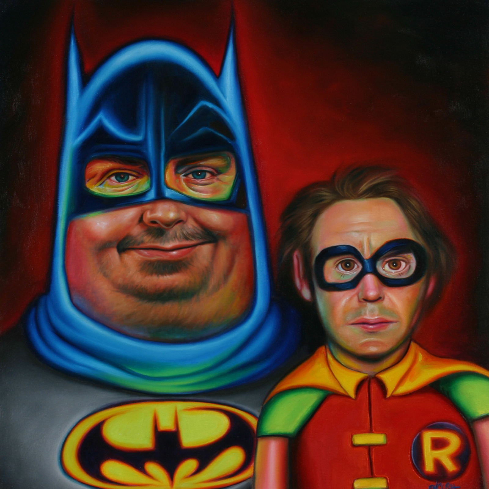
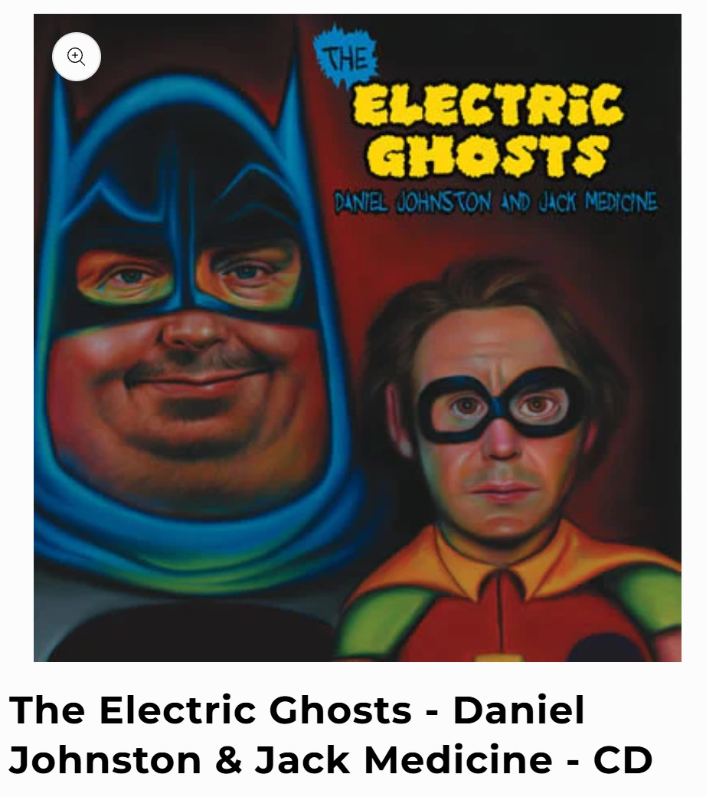

Exhibitions
Ron English, Mark Mothersbaugh & Daniel Johnston: 3 Man Art Exhibition, Copro/Nason Gallery, Santa Monica, California, US, September 23–October 15, 2005.
Rock, Paper, Scissor, Robert Berman Gallery, Santa Monica, California, US, February 28–March 21, 2009. Curated by Jon Cournoyer.
Notes
Also known as Danman & Robin.
This work appears on Copro/Nason’s page for Ron English, Daniel Johnston, Mark Mothersbaugh, available here, accessed April 13, 2026.
It also appears on Robert Berman Gallery Archive’s selected works page for Rock, Paper, Scissor, available here, accessed April 12, 2026.
This image appears on the cover of The Electric Ghosts – Daniel Johnston & Jack Medicine, documented on Important Records here.
This composition was later adapted by the artist as a related archival pigment print issued as The Electric Ghosts (Daniel Johnston & Jack Medicine). The DirtyPilot product page describes it as measuring 20 × 20 inches on archival fine art paper in an edition of only 10. The page also notes that the print is hand signed by Daniel Johnston, Ron English, and Jack Medicine; see the related print on DirtyPilot.
This work references DC Comics’ Batman and Robin; a representative image is available here.
Ancillary Documentation


